ಒತ್ತಡವನ್ನು ಅರ್ಥಮಾಡಿಕೊಳ್ಳಿ
Mental Overload, Deadline ಒತ್ತಡ, ತಪ್ಪಿನ ನೆನಪುಗಳು ಮತ್ತು ಕೆಲಸದ ಅಭದ್ರತೆಯ ಬಗ್ಗೆ ಸರಳ ವಿವರಣೆ.
160 ಪುಟಗಳ ಮುದ್ರಿತ ಕನ್ನಡ ಪುಸ್ತಕ
ಕೆಲಸದ ಒತ್ತಡ, ಓವರ್ಥಿಂಕಿಂಗ್, ಹೆಲ್ತ್ ಆಂಗ್ಸೈಟಿ ಮತ್ತು ನಿದ್ರೆಯ ಅಶಾಂತಿಯಿಂದ ಹೊರಬರಲು ಸರಳ ಮಾರ್ಗದರ್ಶಿ.
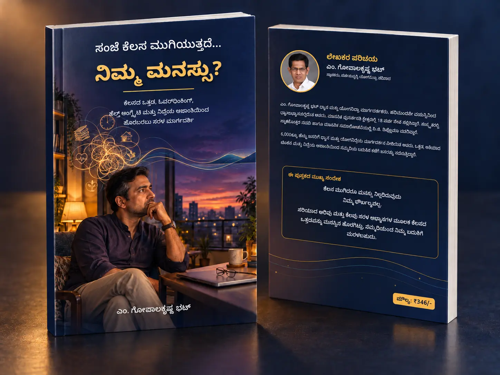
₹261ರಲ್ಲಿ ಕೊರಿಯರ್ ಸೇರಿದೆ · ಸುರಕ್ಷಿತ Cashfree ಪೇಮೆಂಟ್
ನಿಮ್ಮ ಸಂಜೆಗೊಂದು ಉತ್ತಮ ಸಂಗಾತಿ
160 ಪುಟಗಳಲ್ಲಿ, ಕೆಲಸದ ಒತ್ತಡವನ್ನು ಅರ್ಥಮಾಡಿಕೊಳ್ಳಲು ಮತ್ತು ಪ್ರತಿದಿನ ಬಳಸಬಹುದಾದ ಸರಳ ಅಭ್ಯಾಸಗಳಿಂದ ಆರಂಭಿಸಲು ವಿಸ್ತೃತ ಮಾರ್ಗದರ್ಶನ.
ಪುಸ್ತಕದ ಪ್ರತಿಯನ್ನು ಪಡೆಯಿರಿ →ನಿಮಗೂ ಹೀಗೆ ಅನಿಸುತ್ತಿದೆಯೇ?
ಆಫೀಸ್ ಕೆಲಸ ಮುಗಿದರೂ, ಅದರ ಯೋಚನೆಗಳು ಮನೆಯಲ್ಲೂ ಮುಂದುವರಿಯುತ್ತಿವೆಯೇ?
ಕುಟುಂಬದೊಂದಿಗೆ ಇದ್ದರೂ, ಮನಸ್ಸು ನಾಳೆಯ ಕೆಲಸದಲ್ಲಿ ಮುಳುಗಿದೆಯೇ?
ಒಂದು ತಪ್ಪು ಅಥವಾ ಕಠಿಣ ಮಾತನ್ನು ಮನಸ್ಸು ಪದೇಪದೇ ನೆನಪಿಸುತ್ತಿದೆಯೇ?
ಸಣ್ಣ ಆರೋಗ್ಯ ಬದಲಾವಣೆಯೂ ದೊಡ್ಡ ಭಯವಾಗಿ ಕಾಣುತ್ತಿದೆಯೇ?
ಭಾನುವಾರ ಸಂಜೆಯಿಂದಲೇ ಸೋಮವಾರದ ಚಿಂತೆ ಆರಂಭವಾಗುತ್ತದೆಯೇ?
ದೇಹ ದಣಿದಿದ್ದರೂ, ಮಲಗಿದಾಗ ಮನಸ್ಸು ಚುರುಕಾಗುತ್ತಿದೆಯೇ?
ಈ ಅನುಭವಗಳನ್ನು ಅರ್ಥಮಾಡಿಕೊಂಡು, ಕೆಲಸ ಮತ್ತು ವೈಯಕ್ತಿಕ ಬದುಕಿನ ನಡುವೆ ಆರೋಗ್ಯಕರ ಮಾನಸಿಕ ಗಡಿಯನ್ನು ನಿರ್ಮಿಸಲು ಈ ಪುಸ್ತಕ ನೆರವಾಗುತ್ತದೆ.
ಪುಸ್ತಕದಲ್ಲಿ ಏನು ಸಿಗುತ್ತದೆ?
Mental Overload, Deadline ಒತ್ತಡ, ತಪ್ಪಿನ ನೆನಪುಗಳು ಮತ್ತು ಕೆಲಸದ ಅಭದ್ರತೆಯ ಬಗ್ಗೆ ಸರಳ ವಿವರಣೆ.
ಕೆಲಸದ ಒತ್ತಡ ಕುಟುಂಬದ ಮೇಲೆ ಹೇಗೆ ಪರಿಣಾಮ ಬೀರುತ್ತದೆ ಮತ್ತು ದಿನದ ಕೆಲಸಕ್ಕೆ ಮಾನಸಿಕ ಅಂತ್ಯ ನೀಡುವುದು ಹೇಗೆ?
ಮಾತನಾಡುವ ಆತಂಕ, ಕೆಲಸ ಮುಂದೂಡುವುದು ಮತ್ತು ಹೆಲ್ತ್ ಆಂಗ್ಸೈಟಿಯನ್ನು ಗುರುತಿಸಲು ನೆರವಾಗುವ ವಿಷಯಗಳು.
ಖರೀದಿಸುವ ಮೊದಲು ಒಳಪುಟಗಳನ್ನು ನೋಡಿ
ಚಿತ್ರದ ಮೇಲೆ ಒತ್ತಿ ದೊಡ್ಡದಾಗಿ ಓದಬಹುದು.
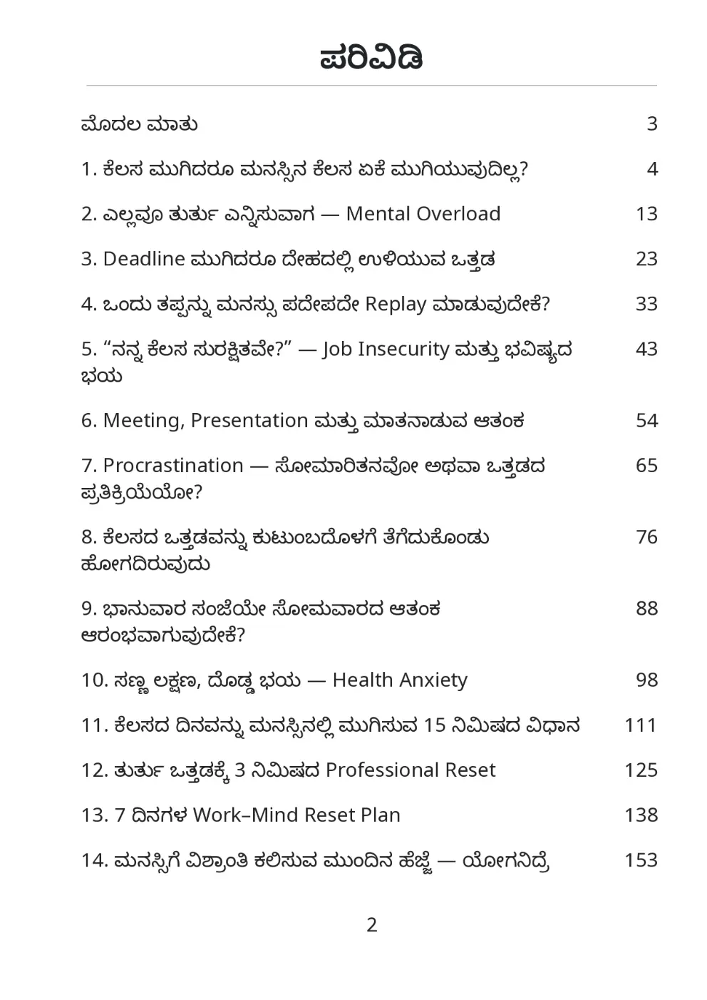
ವಿಸ್ತೃತ 14 ಅಧ್ಯಾಯಗಳ ಒಳನೋಟ
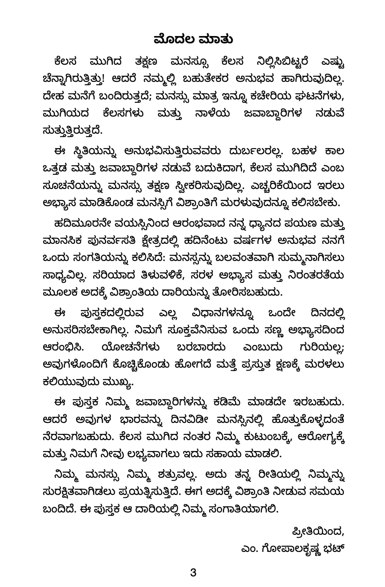
ಈ ಪುಸ್ತಕದ ಉದ್ದೇಶದ ಕುರಿತು ಲೇಖಕರ ಮಾತು
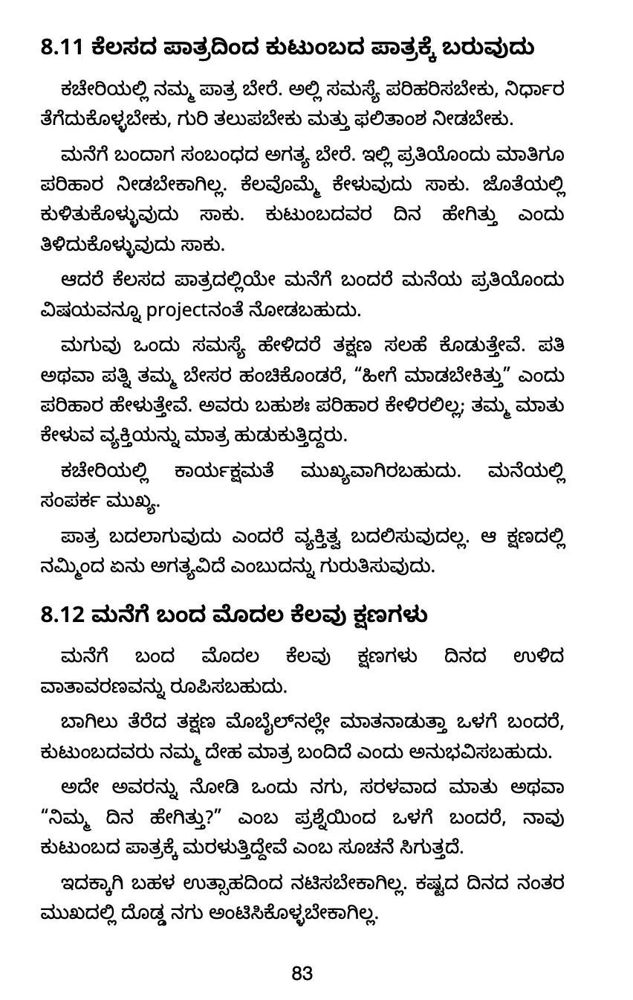
ಕೆಲಸದ ಒತ್ತಡವು ಮನೆಯ ಜೀವನಕ್ಕೆ ತಲುಪುವ ರೀತಿ
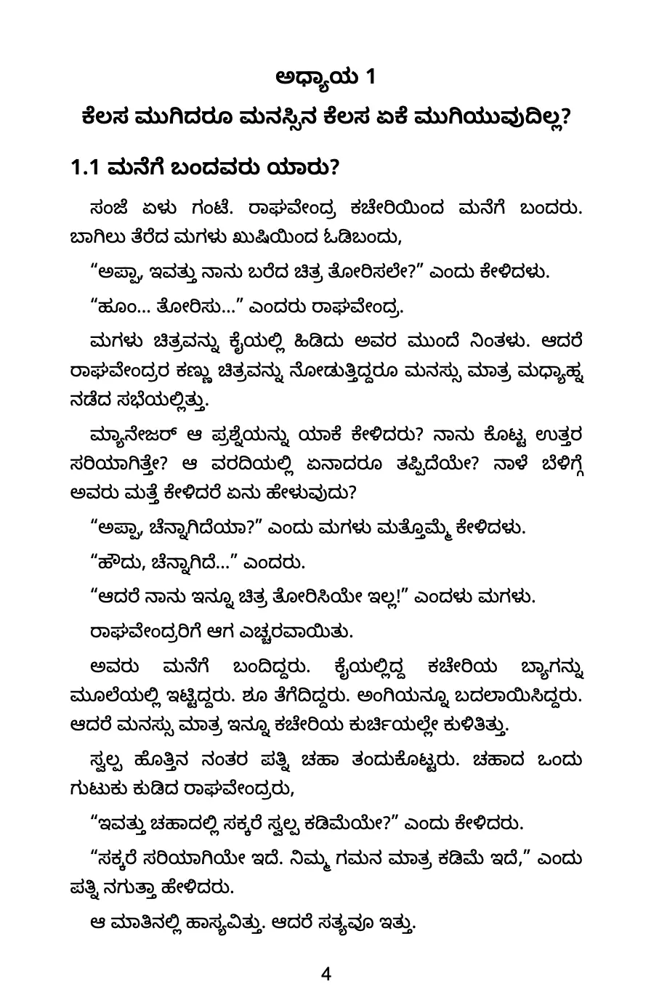
ಕೆಲಸ ಮುಗಿದರೂ ಯೋಚನೆ ಏಕೆ ಮುಂದುವರಿಯುತ್ತದೆ?
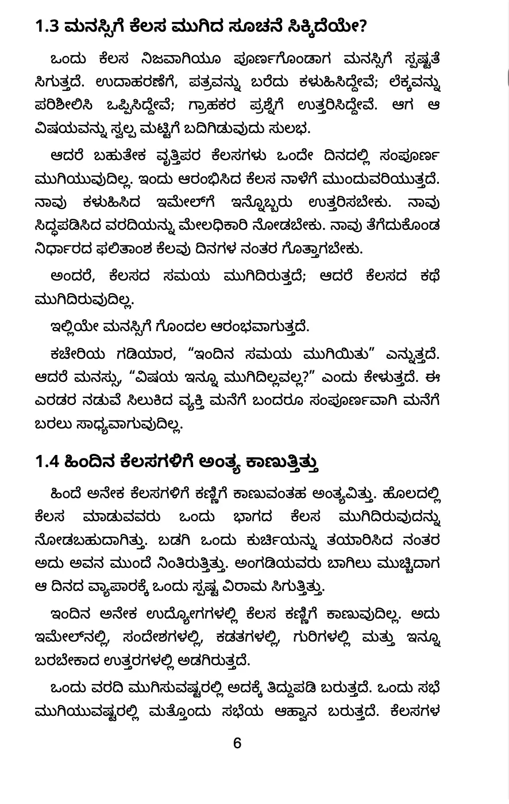
ಕೆಲಸ ಮತ್ತು ವೈಯಕ್ತಿಕ ಬದುಕಿನ ನಡುವೆ ಆರೋಗ್ಯಕರ ಗಡಿ
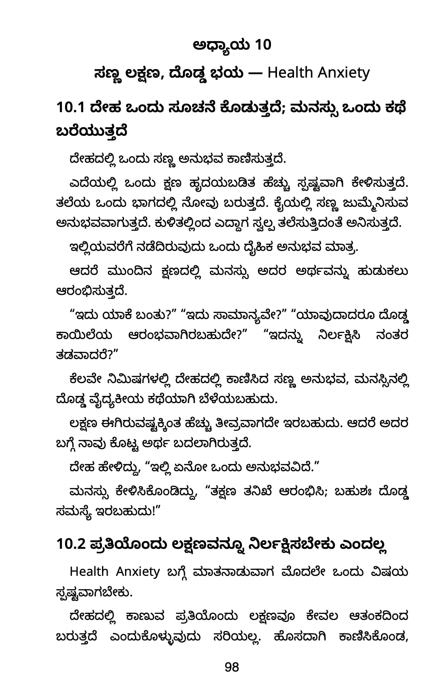
ಆರೋಗ್ಯದ ಚಿಂತೆಯ ಮಾದರಿಯನ್ನು ಅರಿತುಕೊಳ್ಳುವ ಪರಿಚಯ
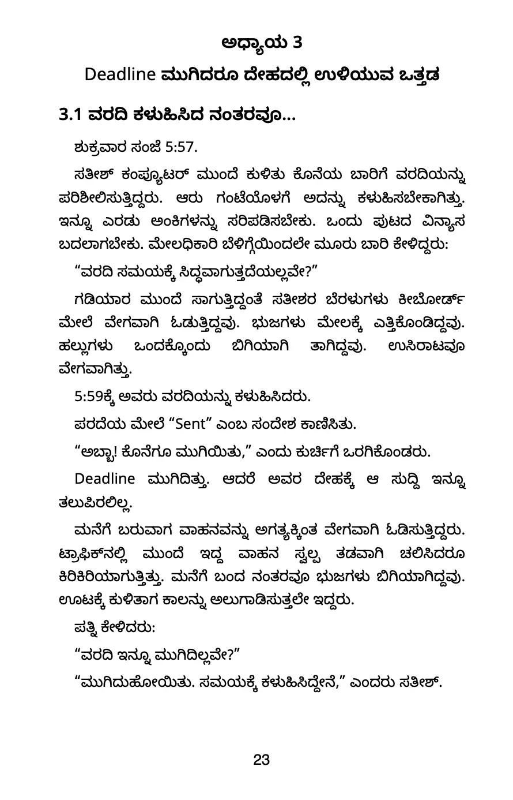
ಗಡುವಿನ ಒತ್ತಡದ ಸಮಯದಲ್ಲಿ ಮನಸ್ಸಿನ ಆರೈಕೆ
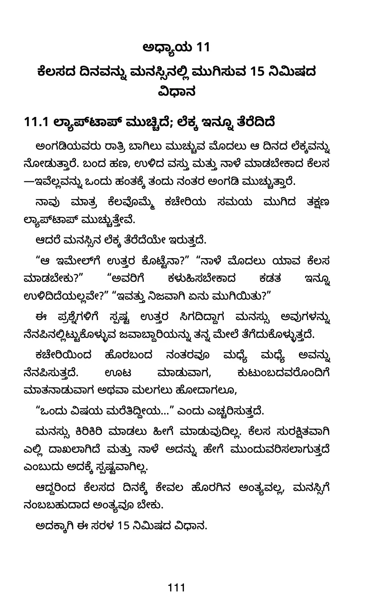
ಕೆಲಸದ ದಿನಕ್ಕೆ ಮಾನಸಿಕ ಅಂತ್ಯ ನೀಡುವ ಕ್ರಮ
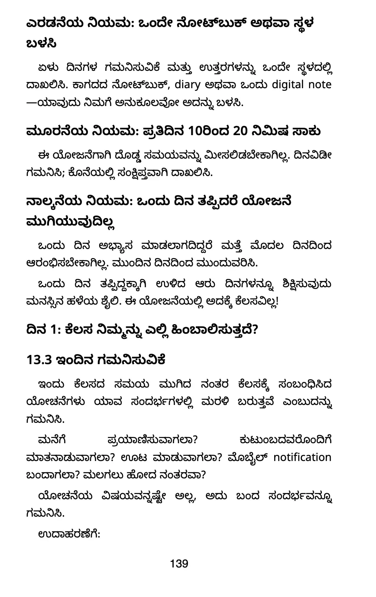
ನಿಮ್ಮ ದಿನನಿತ್ಯದ ಮನಸ್ಥಿತಿಯನ್ನು ಗಮನಿಸಲು ಪ್ರಶ್ನೆಗಳು
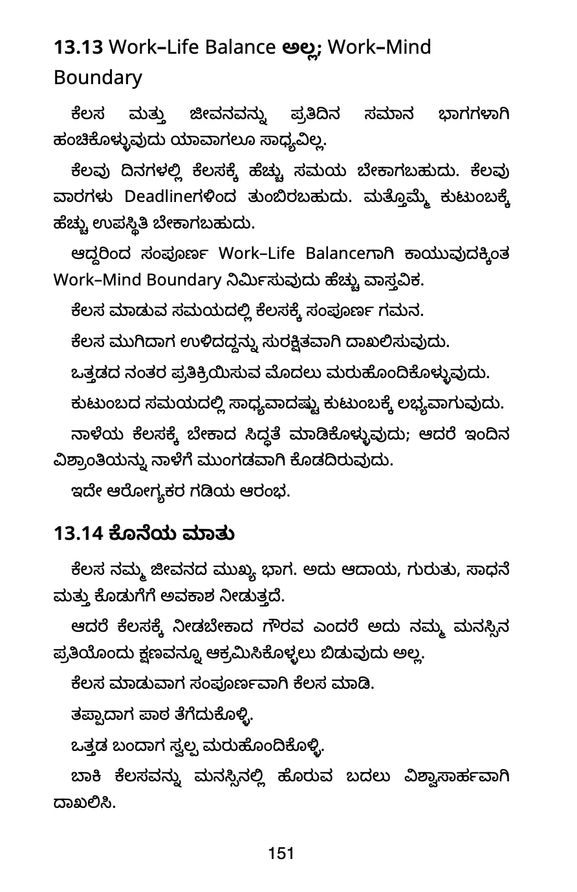
ದಿನನಿತ್ಯದ ಸಮತೋಲನದ ಕಡೆಗೆ ಸಣ್ಣ ಹೆಜ್ಜೆಗಳು
ಓದುವುದರಿಂದ ಅಭ್ಯಾಸದ ಕಡೆಗೆ
ಮನೆಗೆ ಬಂದ ಮೇಲೂ ಮುಂದುವರಿಯುವ ಕೆಲಸದ ಯೋಚನೆಗಳನ್ನು ಗಮನಿಸಲು ಒಂದು ಕ್ರಮ.
ಮುಂದಿನ ಕೆಲಸಕ್ಕೆ ಮರಳುವ ಮೊದಲು ದೇಹ, ಉಸಿರು ಮತ್ತು ಗಮನಕ್ಕೆ ಸ್ವಲ್ಪ ಅವಕಾಶ.
ಎಲ್ಲ ಒತ್ತಡವನ್ನೂ ಏಳು ದಿನಗಳಲ್ಲಿ ನಿವಾರಿಸುವ ಭರವಸೆಯಲ್ಲ; ನಿಮ್ಮ ಅಭ್ಯಾಸವನ್ನು ಆರಂಭಿಸಲು ಒಂದು ಯೋಜನೆ.
ಕೆಲಸ ಮುಗಿದ ನಂತರವೂ ಕೆಲಸದ ಚಿಂತೆ, ಓವರ್ಥಿಂಕಿಂಗ್ ಮತ್ತು ದಿನನಿತ್ಯದ ಒತ್ತಡ ಮುಂದುವರಿಯುವವರಿಗೆ.
ಬೇಡ. ವಿಷಯಗಳನ್ನು ಸರಳ ಕನ್ನಡದಲ್ಲಿ ಪರಿಚಯಿಸಲಾಗಿದೆ. ನಿಮ್ಮ ಅನುಕೂಲಕ್ಕೆ ತಕ್ಕಂತೆ ಸಣ್ಣ ಅಭ್ಯಾಸಗಳಿಂದ ಆರಂಭಿಸಬಹುದು.
ಹೌದು. ಇದು 160 ಪುಟಗಳ ಕನ್ನಡ ಮುದ್ರಿತ ಪುಸ್ತಕ.
Shipping & Delivery ಪುಟದಲ್ಲಿ ವಿವರಗಳಿವೆ. ಖರೀದಿಸುವಾಗ ಸಂಪೂರ್ಣ ವಿಳಾಸ ಮತ್ತು ಸರಿಯಾದ ಮೊಬೈಲ್ ಸಂಖ್ಯೆ ನಮೂದಿಸಿ.
94489 57581 ಸಂಖ್ಯೆಗೆ WhatsApp ಮಾಡಿ ಅಥವಾ gkbhatssy@gmail.com ಗೆ ಬರೆಯಿರಿ. ಪೇಮೆಂಟ್ ಆಗಿದ್ದರೆ Order ID ತಿಳಿಸಿ.
ನಿಮ್ಮ ಮನಸ್ಸಿಗೂ ಒಂದು ವಿರಾಮ ಕೊಡೋಣ
ಸರಳವಾಗಿ ಓದಿ. ನಿಮ್ಮ ಬದುಕಿಗೆ ತಕ್ಕ ಸಣ್ಣ ಬದಲಾವಣೆಯಿಂದ ಆರಂಭಿಸಿ.
160 ಪುಟಗಳ ಮುದ್ರಿತ ಕನ್ನಡ ಪುಸ್ತಕ · ಕೊರಿಯರ್ ಶುಲ್ಕ ಸೇರಿದಂತೆ ₹261